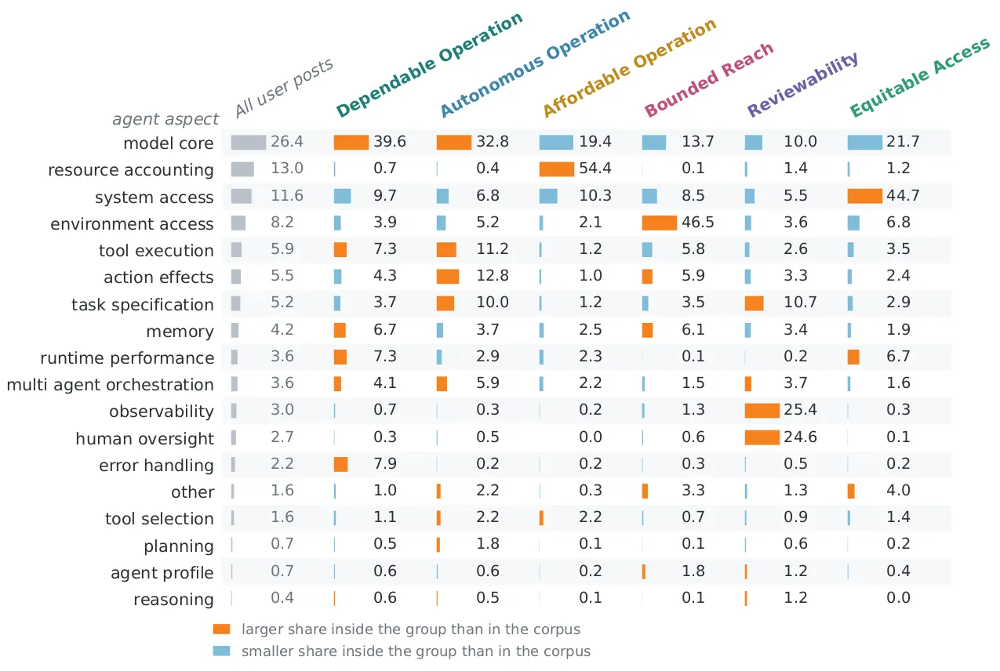
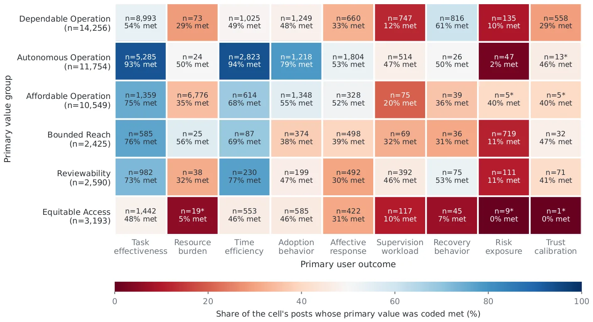
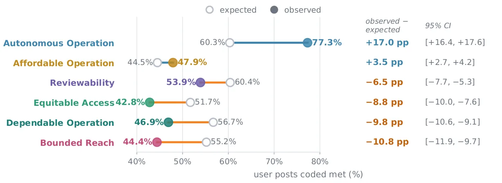

O problema: avaliar agentes pela tarefa, ignorar o que importa para quem usa
Agentes de IA autônomos — sistemas baseados em LLMs que executam tarefas inteiras sem supervisão constante — estão cada vez mais presentes no trabalho real de desenvolvedores e cientistas de dados. Diferente de um assistente conversacional que devolve um patch para você revisar, um agente lê o repositório, edita arquivos, roda testes e faz commit sob suas credenciais, tudo em uma única execução que os autores chamam de run.
O OpenClaw, agente open-source lançado em novembro de 2025 que roda no computador do usuário e opera através de apps de chat como WhatsApp, acumulou mais de 370 mil estrelas no GitHub até agosto de 2026. Mas as avaliações técnicas desses agentes medem se a tarefa foi completada, não se o sistema respeita o que os usuários consideram importante — seus valores humanos.
Este paper usa Value Sensitive Design (VSD), framework que define valor como aquilo que uma pessoa ou grupo considera importante na vida, para analisar 73.093 posts em primeira pessoa no Reddit sobre uso do OpenClaw. A pergunta central: quais valores humanos os usuários invocam quando delegam trabalho a um agente, e a que aspectos do agente esses valores se conectam?
A ideia: mapear valores, aspectos do agente e resultados em posts reais
Os autores coletaram 1,1 milhão de posts e comentários do Reddit entre janeiro e abril de 2026 usando as palavras-chave 'openclaw', 'clawdbot' e 'moltbot'. Primeiro, filtraram apenas relatos em primeira pessoa de quem usou ou tentou usar o agente, descartando observações de segunda mão. Isso deixou 187.479 posts.
Depois, aplicaram um esquema de codificação assistido por LLM que extraiu, para cada post, quatro dimensões: (1) o valor humano em jogo, (2) o aspecto do agente envolvido, (3) se o valor foi atendido ou não, e (4) o resultado para o usuário (efetividade, custo ou supervisão). Só posts com as três primeiras dimensões válidas entraram na análise final, totalizando 73.093 posts.
A taxonomia de valores partiu de 12 dos 13 valores de Friedman et al. (cortesia foi excluída por ser sobre polidez interpessoal) e adicionou nove valores indutivamente, como controle humano significativo, confiabilidade e integridade contextual. No total, 21 valores foram identificados e agrupados em seis famílias: Operação Autônoma, Operação Confiável, Operação Acessível, Alcance Limitado, Revisabilidade e Acesso Equitativo.
Os 18 aspectos do agente vieram de decomposições técnicas de arquitetura de agentes (memória, planejamento, ações) e de literatura de HCI sobre supervisão e recuperação. Exemplos: núcleo do modelo, ferramentas externas, regras de parada, credenciais, custos de execução.

Validação humana e análise estatística
Validação humana foi feita em três etapas. Na triagem de relevância (Stage 1), dois anotadores humanos revisaram 400 posts e concordaram com o LLM em 92% dos casos (kappa=0,88). Na codificação de valores (Stage 2), quatro anotadores revisaram 400 posts: concordância de 83,5% no valor humano, 78,8% no aspecto do agente, 87,8% no atendimento do valor.
A análise combinou métodos quantitativos e qualitativos. Primeiro, os autores calcularam a distribuição de aspectos do agente em cada grupo de valores e compararam com a distribuição esperada no corpus inteiro. Aspectos sobre-representados em um grupo revelam onde aquele valor se concentra.
Depois, mediram a taxa de atendimento (met rate) — a proporção de posts em que o valor foi satisfeito — por grupo de valores e por resultado do usuário. Intervalos de confiança vieram de bootstrap com 2.000 reamostragens. Por fim, leitura qualitativa de posts exemplares ilustrou os padrões quantitativos.
Resultado 1: valores nas condições que o usuário configura, não no output
Em quatro dos seis grupos de valores, os posts se concentraram em aspectos do agente que o usuário configura antes da execução, não em aspectos que o agente exerce sozinho. Operação Acessível discutiu custos de execução (61% acima da média do corpus). Alcance Limitado discutiu credenciais e ferramentas externas (38% e 23% acima). Revisabilidade discutiu regras de parada e logs (35% e 22% acima). Acesso Equitativo discutiu instalação e hospedagem (53% e 30% acima).
Operação Confiável e Operação Autônoma discutiram frequentemente o núcleo do modelo, mas esse aspecto era o mais discutido no corpus inteiro (21,8% dos posts), então não caracterizava exclusivamente esses grupos. O padrão geral: valores não se ligam ao que o agente produz, mas às fronteiras configuráveis que o usuário estabelece ao redor da execução.
Os autores chamam essas fronteiras de condições de operação (operating conditions): o modelo e o host, o arranjo de recursos, o alcance concedido, o portão de aprovação e registro, a instalação inicial. Uma condição não é uma categoria codificada, mas o que o usuário pode ajustar em cada aspecto do agente. Você escolhe qual modelo roda, mas não como ele raciocina; você define uma regra de parada, mas não o plano que o agente forma.

Resultado 2: valores atendidos na entrega, não atendidos na supervisão
A taxa de atendimento de valores variou drasticamente entre os grupos. Em cinco dos seis grupos, valores foram majoritariamente atendidos quando os posts descreviam o que o agente entregou (resultado de efetividade): Operação Autônoma 71% atendida, Operação Confiável 68%, Operação Acessível 66%, Alcance Limitado 63%, Acesso Equitativo 58%.
Mas em todos os seis grupos, valores foram majoritariamente não atendidos quando os posts descreviam o usuário supervisionando o agente (resultado de supervisão): Operação Autônoma 71% não atendida, Operação Confiável 65%, Operação Acessível 60%, Alcance Limitado 58%, Revisabilidade 54%, Acesso Equitativo 52%.
Revisabilidade foi o único grupo sem maioria de valores atendidos em nenhum resultado: 50% atendida em efetividade, 46% em custo, 46% em supervisão. Isso reflete a dificuldade de inspecionar o que aconteceu durante uma run: usuários queriam logs detalhados, mas o agente não fornecia, ou fornecia em formato ilegível.
Custos (gastar créditos, tempo, dados) apareceram principalmente em Operação Acessível (42% dos posts desse grupo mencionaram custo) e Revisabilidade (31%). Em ambos, a maioria dos posts sobre custo reportou valores não atendidos: 58% em Operação Acessível, 54% em Revisabilidade. Usuários relataram runs que esgotaram saldo de API, consumiram horas de GPU ou apagaram trabalho irrecuperável.

Resultado 3: quando a condição se move durante a run, o valor vira custo
Em quatro grupos de valores, a condição pode ser fixada antes da run começar: você escolhe o modelo, define quais credenciais conceder, decide o que instalar. Mas em Operação Acessível e Revisabilidade, a condição se move enquanto a run está em andamento.
Em Operação Acessível, usuários fixaram orçamentos de API antes da run, mas o agente gastou além do limite ou não parou quando deveria. Um usuário relatou: 'Eu configurei um limite de $20, mas o agente continuou chamando a API até esgotar $47 porque não checava o saldo entre as chamadas.' O valor (affordability, acessibilidade financeira) virou custo porque a condição (quanto gastar) não pôde ser mantida fixa.
Em Revisabilidade, usuários ativaram logs e regras de aprovação antes da run, mas o agente não registrou passos intermediários ou pediu aprovação tarde demais. Um usuário escreveu: 'Eu habilitei o modo de aprovação, mas o agente só me perguntou depois de já ter deletado três arquivos.' A condição (quando revisar) se moveu para depois do dano.
Nos outros quatro grupos, a condição permanece estável: o modelo não muda no meio da run, o alcance concedido não se expande sozinho, a instalação não se refaz. Nesses grupos, valores foram majoritariamente atendidos quando o agente entregou o resultado.

O que os usuários ganham e perdem ao delegar
Operação Autônoma foi o grupo com maior taxa de atendimento (68% no geral) e o único com atendimento significativamente acima do esperado (+7 pontos percentuais). Usuários relataram que o agente completou tarefas complexas sem intervenção: 'Ele refatorou 30 arquivos, rodou testes, corrigiu falhas e fez commit, tudo enquanto eu dormia.'
Mas o aspecto mais discutido em Operação Autônoma foi o núcleo do modelo (32% dos posts), enquanto a condição que usuários ajustaram foi o alcance concedido (credenciais, arquivos, serviços). O que os usuários discutiram e o que puderam mudar não coincidiram: eles queriam modelos mais capazes, mas só podiam restringir o que o modelo tocava.
Operação Confiável teve 63% de atendimento geral, mas 65% de não atendimento em supervisão. Usuários relataram que o agente falhou silenciosamente, produziu outputs inconsistentes ou não explicou por que parou. 'Ele disse que terminou, mas metade dos testes ainda falhava e não havia log do que foi tentado.'
Revisabilidade teve a menor taxa de atendimento (49%) e foi o único grupo sem maioria atendida em nenhum resultado. Usuários queriam auditar o que aconteceu, mas o agente não fornecia rastreabilidade suficiente. 'Eu precisava saber quais APIs ele chamou e com quais parâmetros, mas o log só dizia completed step 7.'
Implicações para o design de agentes
Os autores argumentam que suportar valores humanos exige atenção não só ao que o agente realiza, mas às condições que os usuários estabelecem ao redor da delegação. Três implicações de design emergem.
Primeira: tornar as condições de operação explícitas e ajustáveis. Usuários precisam ver e modificar limites de custo, alcance, aprovação e registro antes e durante a run. Isso significa interfaces que exponham essas condições como cidadãs de primeira classe, não como configurações avançadas enterradas em menus.
Segunda: garantir que condições fixadas antes da run permaneçam fixas durante ela. Se um usuário define um orçamento de API, o agente deve parar ao atingi-lo, não continuar e reportar o estouro depois. Se um usuário ativa aprovação, o agente deve pedir permissão antes de ações irreversíveis, não depois.
Terceira: fornecer rastreabilidade suficiente para que usuários possam auditar o que aconteceu. Logs devem registrar não só que uma etapa foi completada, mas quais ferramentas foram chamadas, com quais argumentos, e quais resultados retornaram. Isso é especialmente crítico para Revisabilidade, o grupo com menor atendimento de valores.
Limitações e o que fica em aberto
O estudo analisa apenas posts públicos no Reddit sobre um único agente, o OpenClaw, em um período de três meses. Usuários que postam no Reddit podem não representar todos os usuários de agentes de IA, e o OpenClaw, por ser open-source e rodar localmente, pode atrair um público mais técnico que agentes comerciais em nuvem.
A codificação foi assistida por LLM, com validação humana em amostras. Embora a concordância tenha sido alta (83,5% no valor humano), erros de classificação podem ter ocorrido nos 73 mil posts restantes. Os autores não reportam qual LLM foi usado nem como os prompts foram ajustados, o que dificulta reprodução.
O paper não mede se os valores identificados são os mais importantes para os usuários, apenas quais aparecem nos posts. Valores que usuários consideram fundamentais mas que o agente sempre atende (ou sempre viola) podem estar sub-representados, porque não motivam posts. Estudos futuros poderiam combinar análise de posts com entrevistas ou surveys.
Finalmente, o conceito de value-sensitive delegation é proposto mas não testado experimentalmente. O paper mostra correlação entre condições configuráveis e atendimento de valores, mas não demonstra causalidade. Experimentos controlados poderiam manipular quando e como usuários ajustam condições e medir o impacto no atendimento de valores.
Por que isso importa
Agentes autônomos de IA estão deixando de ser protótipos de laboratório para se tornarem ferramentas de trabalho real. Benchmarks técnicos medem se o agente completa a tarefa, mas não capturam se ele respeita o que os usuários valorizam — custo, controle, transparência, recuperação.
Este paper mostra que esses valores não se ligam principalmente ao output do agente, mas às condições que o usuário pode configurar ao redor da execução. E mostra que, quando essas condições se movem durante a run, valores viram custos: orçamentos estourados, arquivos deletados, aprovações pedidas tarde demais.
A contribuição central é conceitual: value-sensitive delegation nomeia a relação entre um valor humano, a condição de operação que o carrega, e o momento em que o usuário ainda pode mudá-la. Para que agentes respeitem valores humanos, designers precisam tornar essas condições explícitas, estáveis e auditáveis — não só entregar a tarefa completa.
O que fica
- Análise de 73 mil posts no Reddit mostra que valores humanos em agentes de IA se concentram nas condições que o usuário configura (custo, alcance, supervisão), não no output final.
- Valores são atendidos quando o agente entrega resultados (68% em Operação Autônoma), mas não atendidos quando o usuário precisa supervisionar (71% não atendida em Operação Autônoma).
- Quando condições de operação se movem durante a execução (orçamento, aprovação), valores viram custos: APIs esgotadas, arquivos deletados, aprovações pedidas tarde demais.
- Implicação de design: suportar valores humanos exige tornar condições de operação explícitas, estáveis durante a run e auditáveis depois — não só completar a tarefa.
Paper original: Value-Sensitive Delegation in Everyday AI Agent Use: Evidence from OpenClaw
Comentários
Nenhum comentário ainda. Seja o primeiro.